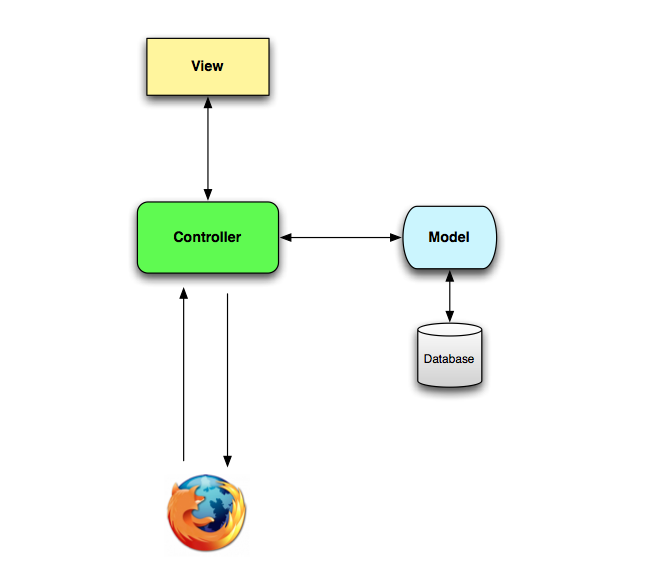

05/02/14 - Ruby on Rails
Ruby on Rails or just Rails is an open source web application framework which runs via the Ruby programming language.
In other words, Rails is a software library, a package library which is known as RubyGem that has the necessary files and info for being installed on the system. Being a framework, Rails combines Ruby, HTML, CSS and JavaScript to create web applications on a web server. Because it runs on a web server, Rails is also called a 'back-end' app development platform.
Rails 'Model-View-Controller' pattern or MVC
What does it mean and how does it work?
As the name says, MVC consists of three components which we use to structure web applications. Let's look what each component does, after a web browser sent a request:
- The web server receives the request and finds out which controller to use.
- Controller are a Ruby classes with several methods used to handle requests. Controllers are therefore in charge of what to do after the web server receives a request from the browser. Controller interact with View and Model.
- Models are objects, i.e. also Ruby classes (like User). Only models talk to the database and they deal with validating, associating and transacting data. They give the data they get from the database back to the controller.
- Views are what the user sees. Views are templates that get converted to HTML and then sent back to the browser. The process of converting the data received from the model into a view is called "rendering a view". The order to render comes from the controller. View is only doing what the controller tells it to do and only reading what the controller gives it.
The controller is the chief of all actions taken which are...
- ...parsing user requests
- ...invoking the model
- ...rendering the view
- ...returning the full web page to the browser in HTML
There is far more to discuss about Rails and MVC, if you are interested in continuing reading, check out Getting Started with Rails at RailsGuides or read this post Getting Started with MVC.